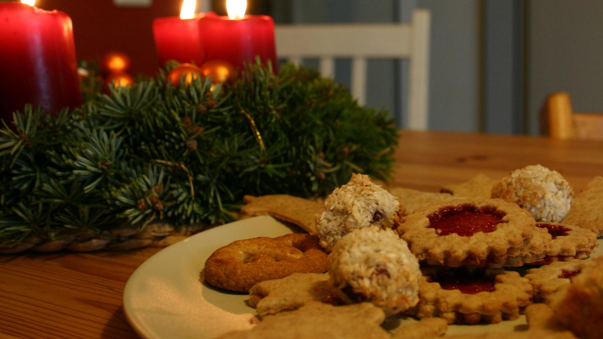

Zurück zur Übersicht
1 Teig – 5 Plätzchen
Aus einem Grundteig werden fünf Sorten: Spitzbuben, Engelsaugen, Spekulatius, Vanillekipferl und Schoko-Orangen-Kekse. Eine Portion entspricht einem Plätzchen.
- Zeit
- 1 Std. 30 Min.
- Schwierigkeit
- aufwendig
- Kategorie
- Süßgebäck
- Ernährung
- vegetarisch
Zutaten
Portionen
Grundteig
- 500 gWeizenmehl Type 405
- 340 gKalte Butter
- Etwas Zitronenabrieb
- 1Vanilleschote, das Mark davon
- 200 gPuderzucker
- 1Ei
Spitzbuben
- 200 gGrundteig
- Marmelade
- Puderzucker
Engelsaugen
- 200 gGrundteig
- Marmelade nach Wahl
- Puderzucker
Spekulatius
- 200 gGrundteig
- 2½ TLSpekulatiusgewürz (2–3 TL)
Vanillekipferl
- 200 gGrundteig
- 25 gGemahlene Mandeln (20–30 g)
- 1 TLGourmet-Vanillepulver
- Puderzucker
Schoko-Orangen-Kekse
- 200 gGrundteig
- 20 gOrangeat
- 20 gZartbitter-Kuvertüre
- Kuvertüre zum Überziehen
- Orangeat zum Dekorieren
Zubereitung
- Grundteig: Mehl, Butter, Zitronenabrieb und Vanillemark mischen. Puderzucker und Ei dazugeben und alles verkneten. Den Teig in fünf gleiche Stücke teilen und den Backofen auf 170 °C Ober-/Unterhitze vorheizen.
- Spitzbuben: Den Teig 2–3 mm dick ausrollen und Kreise ausstechen, bei der Hälfte davon einen kleinen Stern für die Deckel ausstechen. 10–13 Minuten backen und gut auskühlen lassen. Die Deckel mit Puderzucker bestäuben, die Böden umdrehen, gleichmäßig mit Marmelade bestreichen und die Deckel leicht andrücken.
- Engelsaugen: Den Teig zu einer Rolle von etwa 2 cm Durchmesser formen und in 2 cm lange Stücke schneiden. Zu Kugeln rollen, auf ein mit Backpapier belegtes Blech legen, leicht flach drücken und mit einem Kochlöffelstiel eine Mulde hineindrücken. Auf mittlerer Schiene 10–13 Minuten backen. Gut ausgekühlt mit Puderzucker bestäuben und die Mulden mit Marmelade füllen.
- Spekulatius: Das Gewürz streifenfrei unter den Teig kneten und kalt stellen. Etwa 3 mm dick ausrollen, leicht bemehlen und eine Strukturform daraufdrücken. Ausschneiden oder ausstechen, auf ein Blech mit Backpapier legen und auf mittlerer Schiene 14–15 Minuten backen.
- Vanillekipferl: Die Mandeln einkneten und den Teig im Kühlschrank durchkühlen lassen. Zu einem Strang von etwa 3 cm Durchmesser rollen, etwas flach drücken, gleichmäßig ausrollen und Halbmonde ausstechen. Auf mittlerer Schiene 10–13 Minuten backen und gut auskühlen lassen. Vanillepulver mit Puderzucker mischen, die Kipferl darin wenden und zum Schluss mit Puderzucker bestäuben.
- Schoko-Orangen-Kekse: Orangeat und Kuvertüre klein hacken und unter den Teig kneten. Etwas durchkühlen lassen, etwa 1 cm dick und 7 cm breit ausrollen und in 2 cm breite Streifen schneiden. Auf mittlerer Schiene 10–13 Minuten backen. Gut auskühlen lassen, in temperierte Kuvertüre tunken, mit Orangeat bestreuen und fest werden lassen.